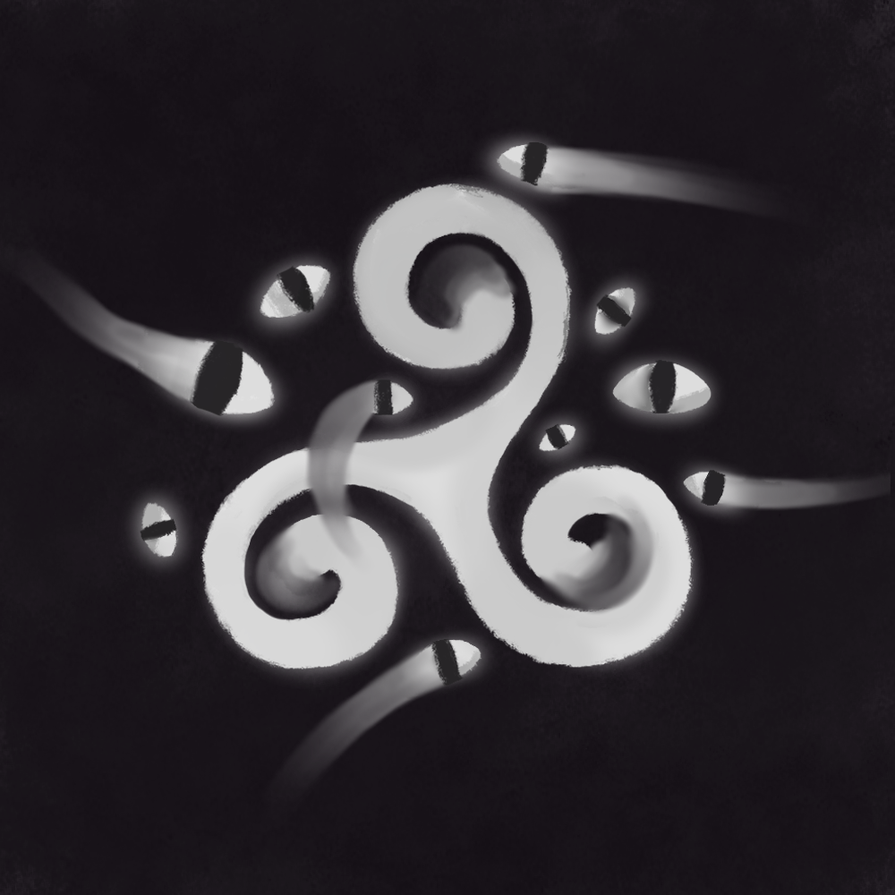

The Triple Spiral popped up in many cultures across the globe between the Neolithic to Bronze Age. One of the earliest occurrences took place between 4400–3600 BC on the island of Malta. It was also found carved into the tomb of Newgrange in Ireland, which was constructed around 3200 BC. Interestingly, it was also found on Greek ships from the Mycenaean phase of the Bronze Age. [1]